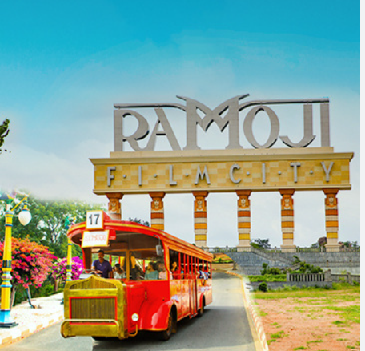
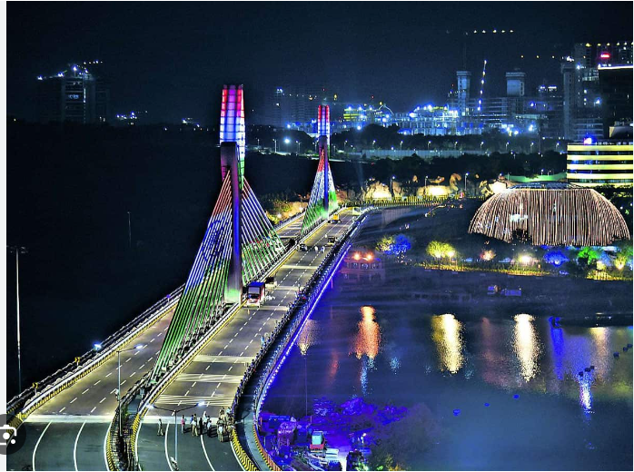
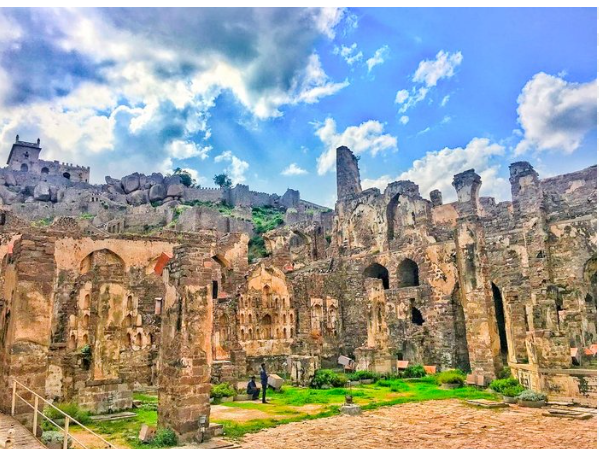
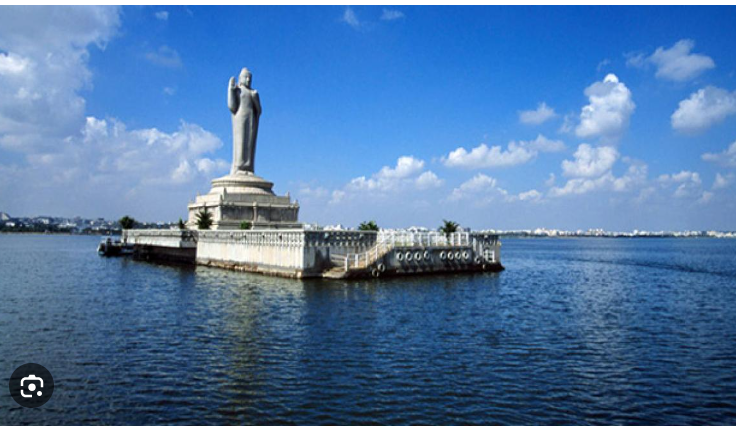

Ultimate guide to visit the Five best places in Hyderabad
Article On Date, Nov 02, 2023
Hyderabad is the capital of Telangana and the fourth most populated city of India. It has a population of over 6.9 million people. It is the 5th largest city among the GDP contributors of India.
Major Attraction in Hydrabad
- Ramoji Film City
- Charminar
- Durgam Cheruvu
- Golconda Fort
- Hussain Sagar Lake
1. Ramoji Film City: It is on the outskirts of Hyderabad. According to the Guinness Book of World Records, Ramoji Film City is the biggest film studio complex in the world. It spreads over 2500 acres and accommodates 20 films at one time.
2. Charminar: It is located in Old Hyderabad, it is the most famous and important landmark of Hyderabad as well. The Charminar was built by Quli Qutub Shah to signify the foundation of Hyderabad. Everyone who comes to Hyderabad visits Charminar and also go for shopping at ‘Laad’ or ‘Chudi’ Bazaar which is spread around Charminar.
3. Durgam Cheruvu: It is one of the most picturesque lakes in Jubilee Hills which once was the water source of Golconda Fort. It is quite a nice and vibrant place for boating, camping and trekking.
4. Golconda Fort: Golconda Fort is a massive fort which is 9 km away from the main city whose ruins are still standing and displaying the rich history and untold story of the city. It is heard that this is the place where the mighty Kohinoor Diamond was kept. At night amazing lighting and sound shows are organized.
5. Hussain Sagar Lake: Located on Neckless Road which is 5 km away from the city, it is one of the largest man-made lakes which is situated in the city of Hyderabad. It is known for the statue of Buddha which is standing right in the middle of the lake.
